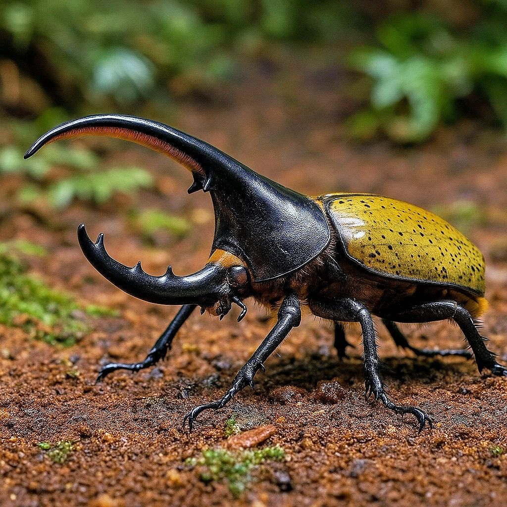

ENTOMOLOGÍA
BIODIVERSIDAD OCULTA
CONOCIENDO EL MUNDO
DE LOS INSECTOS
LOS INSECTOS MAS RAROS DEL MUNDO
Insecto Palo Gigante
El insecto palo gigante de Chan es considerado el insecto más largo del mundo, alcanzando hasta 56 cm con las patas extendidas.
Saltamontes Globo
Este extraño insecto posee estructuras redondas sobre su cuerpo que ayudan a espantar depredadores.
Mariposa de Cristal
Sus alas transparentes permiten que se camuflee fácilmente en la naturaleza.
Hormiga Panda
Aunque parece una hormiga, realmente es una avispa con colores blanco y negro muy llamativos.
Mosca de las hadas
Una de las criaturas mas pequeñas del reino animal, sus alas parecen plumas delicadas bajo un microscopio
Weta Gigante
Uno de los animales mas pesados, originario de Nueva Zelanda
Escarabajo Hércules
Capaz de cargar hasta 850 veces su propio peso, se origina en selvas del centro y sur de America
Mosca del cangrejo
Su larva entra al cuerpo de la araña viva y la consume desde dentro
GALERÍA INTERACTIVA
Haz clic en cualquier imagen para conocer más
Haz clic para más info
Haz clic para más info
Haz clic para más info
Haz clic para más info
Haz clic para más info
Haz clic para más info
Mariposa Monarca
INSECTOS VENENOSOS
Los más peligrosos y fascinantes del mundo
Hormiga Bala
Hormiga Bala
Veneno: Poneratoxina
Dolor: El más doloroso del mundo (Nivel 4+ en el índice Schmidt)
Efecto: Dolor intenso por 24 horas, parálisis temporal
Ubicación: Selvas de Nicaragua a Paraguay
Escorpión Amarillo
Escorpión Amarillo
Veneno: Neurotoxina
Peligro: Responsable de la mayoría de muertes por escorpión
Efecto: Parálisis, dificultad respiratoria, convulsiones
Ubicación: Norte de África y Medio Oriente
Avispa Asiática
Avispa Asiática
Veneno: Mandaratoxina
Peligro: Mata a 50+ personas al año en Japón
Efecto: Daño renal, reacciones alérgicas severas
Ubicación: Asia templada y tropical
Oruga Lonomia
Oruga Lonomia
Veneno: Anticoagulante potente
Peligro: Puede causar hemorragia interna fatal
Efecto: Insuficiencia renal, hemorragias
Ubicación: Selvas de Sudamérica
Araña de Saco
Araña de Saco
Veneno: Citotoxina
Peligro: Muerde sin provocación
Efecto: Úlceras necróticas, fiebre, náuseas
Ubicación: América y Europa
Escarabajo Bombardero
Escarabajo Bombardero
Mecanismo: Pulveriza químicos a 100°C
Peligro: Irritación severa en piel y ojos
Efecto: Quemaduras químicas
Ubicación: Cosmopolita
ENTOMOLOGÍA COMPARADA
Descubre la dualidad del mundo de los insectos
Nivel de peligro: Extremadamente alto
Región: África subsahariana
Enfermedad: Transmite la tripanosomiasis (enfermedad del sueño)
Mortalidad: Causa miles de muertes anuales si no se trata
Dato clave: Infecta a humanos y animales domésticos
Nivel de peligro: Alto (históricamente devastador)
Región: Mundial
Enfermedad: Transmitieron la peste bubónica (Peste Negra)
Mortalidad: Mató a más de 25 millones en el siglo XIV
Dato clave: Siguen siendo vectores de enfermedades hoy
Nivel de peligro: El animal más letal para humanos
Región: Mundial (especialmente zonas tropicales)
Enfermedad: Malaria, dengue, zika, fiebre amarilla
Mortalidad: Más de 700,000 muertes anuales
Dato clave: Solo las hembras pican para alimentarse
Nivel de peligro: Alto (transmisor silencioso)
Región: América Latina
Enfermedad: Transmite el mal de Chagas
Mortalidad: Más de 10,000 muertes anuales
Dato clave: Apodada "el beso" porque pica en la cara
Nivel de peligro: Moderado (agresiva en defensa)
Región: Mundial
Peligro: Picadura extremadamente dolorosa
Mortalidad: Causa muertes por reacciones alérgicas
Dato clave: Construye nidos con fibras vegetales
Beneficio: Control natural de plagas
Región: Mundial
Alimentación: Áfidos y pulgones
Dato curioso: Un solo escarabajo puede comer 5,000 áfidos
Importancia: Aliado esencial de agricultores
Beneficio: Polinización de cultivos
Región: Mundial (excepto extremos climáticos)
Producción: Miel, cera y propóleo
Dato curioso: Polinizan el 75% de cultivos mundiales
Importancia: Esencial para seguridad alimentaria
Beneficio: Aireación del suelo
Región: Mundial
Función: Descomposición de materia orgánica
Dato curioso: Pueden comer su peso diario en tierra
Importancia: Crean fertilizante natural
Beneficio: Polinización nocturna y diurna
Región: Mundial
Función: Indicadoras de salud ambiental
Dato curioso: Existen más de 18,000 especies
Importancia: Embajadoras de conservación
Beneficio: Parte de la cadena alimenticia
Región: Praderas y campos del mundo
Función: Alimento para aves y reptiles
Dato curioso: Pueden saltar 20 veces su longitud
Importancia: Equilibrio en ecosistemas
Insectos Destacados
Los más impresionantes del mundo
Mariposa Monarca
La reina de la migración

Escarabajo Hércules
El más fuerte del mundo
Chinche de hoja
Maestro del camuflaje
Polilla esfinge colibrí
Precisión milimétrica
Larva de Polilla
Futura mariposa
Libélula
Acróbata del aire